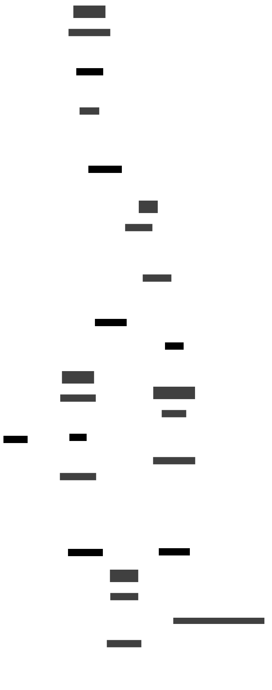

Derafu ETL Architecture
This document explains the architecture and design principles behind Derafu ETL.
ETL Pattern
The Extract-Transform-Load (ETL) pattern is a data integration process used to collect data from various sources, transform it to fit operational needs, and load it into a target database for analysis and storage.
The Three Phases
- Extract: Gathering data from source systems.
- Transform: Converting the extracted data to satisfy operational requirements.
- Load: Writing the transformed data to the target system.
Derafu ETL Implementation
Derafu ETL implements this pattern with a clean, object-oriented approach centered around the Pipeline concept.
Core Components

Extract Phase
DataSource: Encapsulates the data source (spreadsheet, database).DataExtractor: Handles extraction logic.SchemaSource: Extracts schema information from the source.
Transform Phase
DataRules: Defines transformation rules.DataTransformer: Applies transformations to extracted data.
Load Phase
DataTarget: Represents the destination system.DataLoader: Manages loading data into the target.SchemaTarget: Applies schema to the target system.
Pipeline Orchestration
The Pipeline class orchestrates the entire ETL process, providing a fluent interface:
$pipeline
->extract($source) // Configure extraction.
->transform($rules) // Configure transformation.
->load($target) // Configure loading.
->execute() // Run the pipeline.
;
When execute() is called, the pipeline:
- Validates the configuration.
- Extracts data from the source.
- Transforms the data according to rules.
- Synchronizes the target schema with the source.
- Loads the transformed data into the target.
- Returns a result object with statistics.
Key Abstractions
Database
The Database abstraction provides a unified interface for different database types:
SpreadsheetDatabase: Treats spreadsheets as databases using Derafu Spreadsheet.DoctrineDatabase: Works with any database supported by Doctrine DBAL.
Schema
The Schema system represents database structure:
- Tables, columns, indexes, foreign keys.
- Import/export to various formats (Spreadsheet, Doctrine, Markdown, D2, etc.).
Extension Points
Derafu ETL is designed for extensibility:
- New Data Sources: Implement
DataSourceInterface. - Custom Transformations: Extend
DataRules. - New Data Targets: Implement
DataTargetInterface. - Schema Visualization: Implement
SchemaTargetInterface.
Design Principles
- Separation of Concerns: Each component has a clear responsibility.
- Fluent Interface: Expressive, chainable API.
- Flexibility: Support for various formats and systems.
- Extensibility: Easy to extend with custom components.